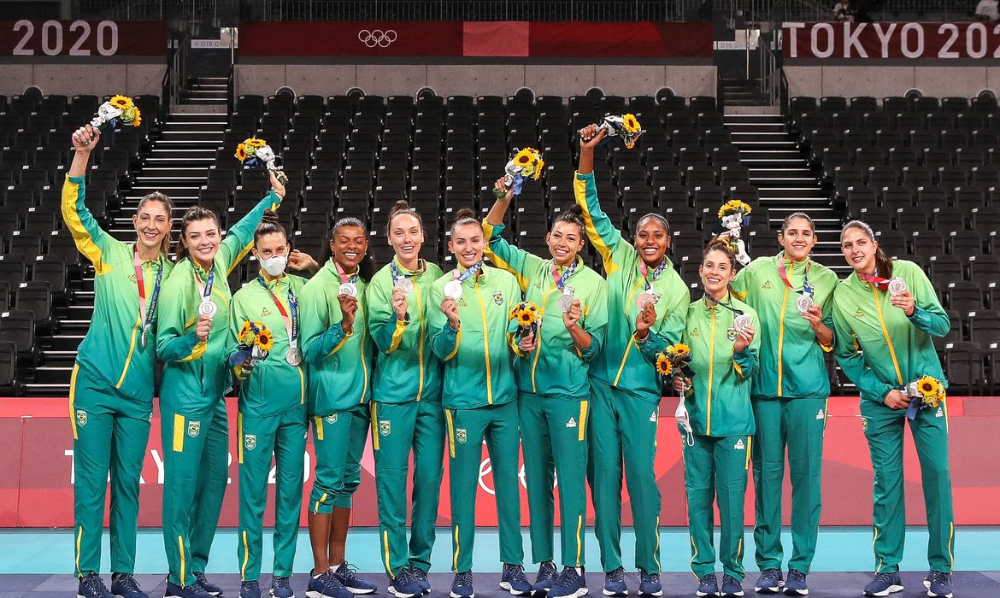

Tóquio, 2020
Seleção Feminina de Vôlei do Brasil é Prata

Em 2021 a Seleção Feminina de vôlei do Brasil conquista sua primeira
medalha olímpica de prata em Tóquio, Japão. Embora o evento tenha
ocorrido em 2021, sua referência é aos Jogos Olímpicos de Verão de
2020 que precisaram ser adiados em decorrência da pandemia causada
pela COVID-19.
Sob comando de José Roberto Guimarães, o elenco era composto por: 2
Carol Gattaz | 3 Rosamaria | 8 Macris | 9 Roberta | 10 Gabi | 11
Tandara (cortada durante o evento por falhar no teste anti-doping) |
12 Natália | 15 Carol | 16 Fernanda Garay | 17 Ana Cristina | 18
Camila Brait | 20 Bia